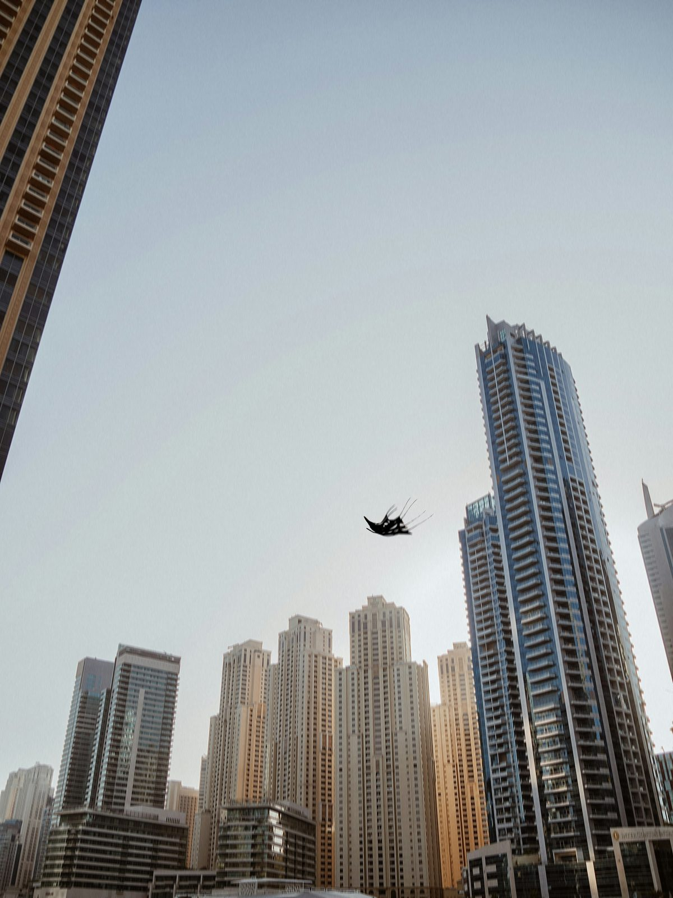
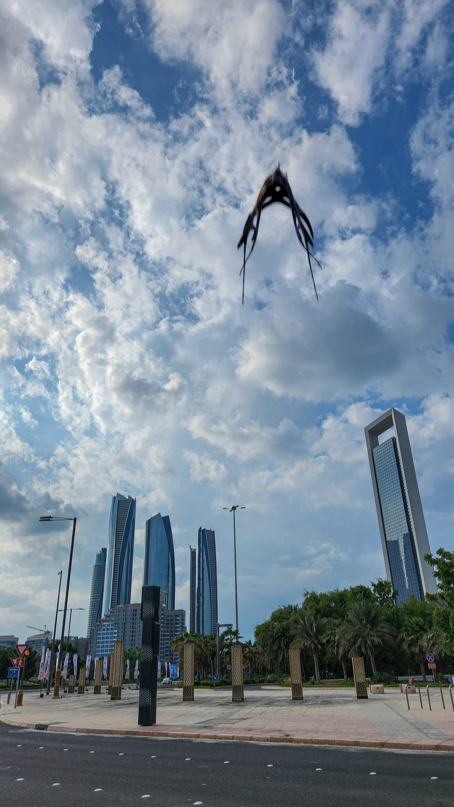
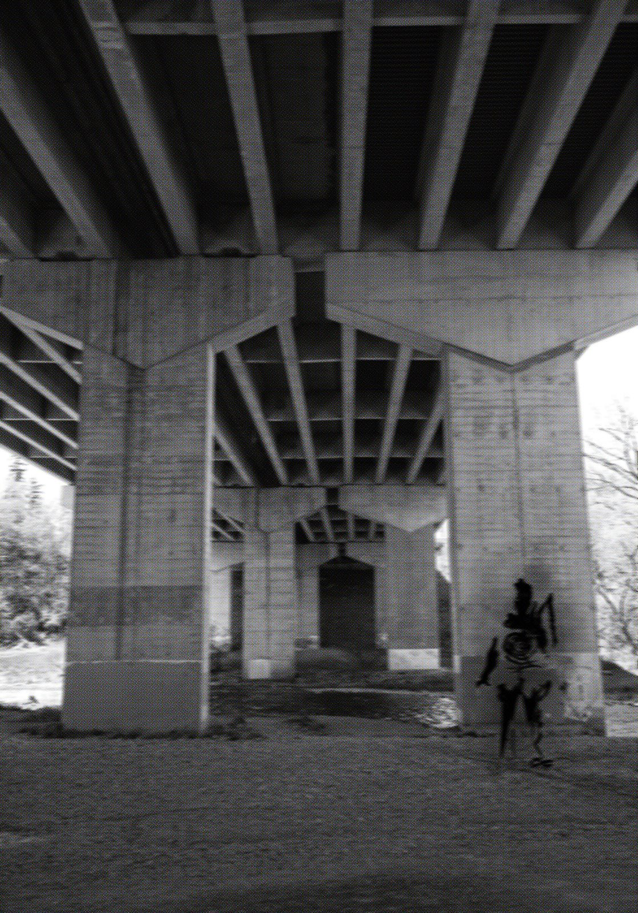

DUBAI — TOP STORY
Several residents have shared photos this week showing an unidentified craft hovering above the Dubai skyline, though no two accounts agree on exactly where or when the images were taken. Authorities have not confirmed any unusual activity, and a request for comment sent to Dubai Police has gone unanswered as of publication. Aviation analysts who reviewed the photos say the craft's silhouette does not match any registered aircraft or known drone model.

A jogger's photo shows the craft hovering silently before vanishing behind the treeline.

A private security camera reportedly caught a figure moving through a walkway late at night.
Local gold prices held firm this week despite fluctuations in the global market.
Several roads will close temporarily this weekend to accommodate the annual marathon route.